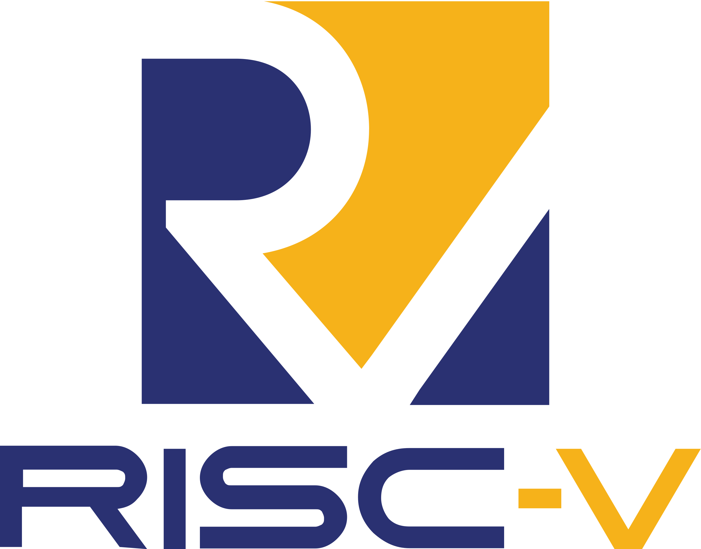

About Me
Bio
My name is Dac Tri Ho and I am a Computer Science student at Simon Fraser University.
Born in 2005 and raised in Ho Chi Minh City, Vietnam. I have been in Canada since 2021.
I enjoy building software across systems, web, and architecture-focused projects.
I am especially interested in low-level systems, hardware and software co-design, and practical engineering workflows.
"The best time to plant a tree is twenty years ago. The second best time is today.”
― Stephen M.R. Covey, The SPEED of Trust: The One Thing that Changes Everything
Skills
Languages
- C
- C++
- Bash
- Python
- JavaScript
- TypeScript
- SQL
Web & Backend
- Next.js
- React.js
- Node.js
- REST APIs
- PHP
- Firebase
- Authentication
Systems & Hardware
- Linux
- POSIX
- Memory Management
- Signals
- Concurrency
- RISC-V
- Cache Systems
- Pipelining
Tools
- Git
- Docker
- CMake
- Valgrind
- Verilator
- SBT
- GitHub Actions
Experiences
Work Experience

ARCH Research Assistant - Hardware Accelerator Development
- Designed and implemented RISC-V hardware accelerators in Chisel using the Chipyard SoC framework.
- Integrated accelerators with Rocket CPU and debugged memory access, timing, and control signal issues.
- Automated simulation and regression testing with Verilator and SBT to improve development efficiency.
- Analyzed Gemmini accelerator performance trade-offs for AI/ML workloads in hardware and software co-design contexts.
Web Developer
- Developed a full-stack platform using Next.js, TypeScript, and PHP for internal station operations.
- Designed reusable API abstraction layers for RESTful requests to improve maintainability.
- Implemented authentication flows including login, signup, and session management.
- Resolved CORS integration issues between modern frontend and legacy backend systems.
Coding Tutor - Introduction to Computer Systems
- Tutored students in memory hierarchy, pipelining, and assembly programming concepts.
- Guided debugging and optimization of C programs to improve correctness and performance.
- Explained complex systems concepts with structured and practical problem-solving methods.
Technical Projects
POSIX Simple Shell Emulator
C, CMake, Linux
- Implemented process control using fork(), exec(), and waitpid() for foreground and background execution.
- Developed internal commands with robust command parsing and error handling.
- Handled SIGINT using custom signal handlers to maintain shell stability.
- Built history support with !! and indexed command recall for usability.
RISC-V Emulator
C, Valgrind, CMake
- Parsed and decoded 32-bit machine instructions using low-level bit manipulation.
- Implemented execution for arithmetic, logical, and control-flow instructions.
- Simulated register and instruction flow updates to replicate CPU behavior.
Cache Emulator
C, Valgrind
- Simulated probing, insertion, and eviction using an LRU replacement policy.
- Processed Valgrind traces to analyze hit and miss patterns.
- Extended to multi-level cache hierarchy to evaluate latency and performance trade-offs.
Custom Memory Allocator
C, Linux
- Implemented user-level heap management with sbrk() for dynamic allocation.
- Developed first-fit, best-fit, and worst-fit allocation strategies with free-list management.
- Implemented block splitting and coalescing to reduce fragmentation.
Tabmark Website
React.js, Node.js, Firebase
- Built a full-stack web app to organize and schedule browser tabs across devices.
- Set up CI/CD pipelines in GitHub Actions for testing, building, and deployment.
- Implemented automated reminder notifications using the SendGrid API.
- Managed cloud-backed real-time synchronization with Firebase.
Library Management System
SQL, Relational Databases
- Designed normalized schemas and ER models up to BCNF for core entities and workflows.
- Implemented complex SQL queries and transactions for search, borrowing, returns, and events.
- Applied constraints and triggers to maintain data integrity and overdue handling logic.